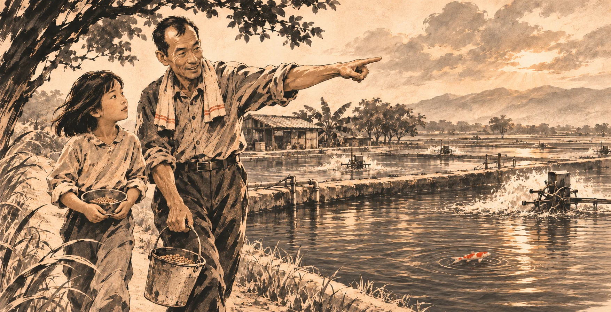
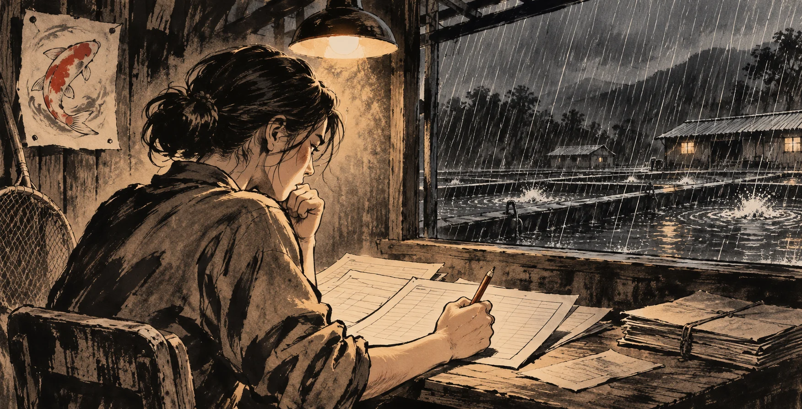
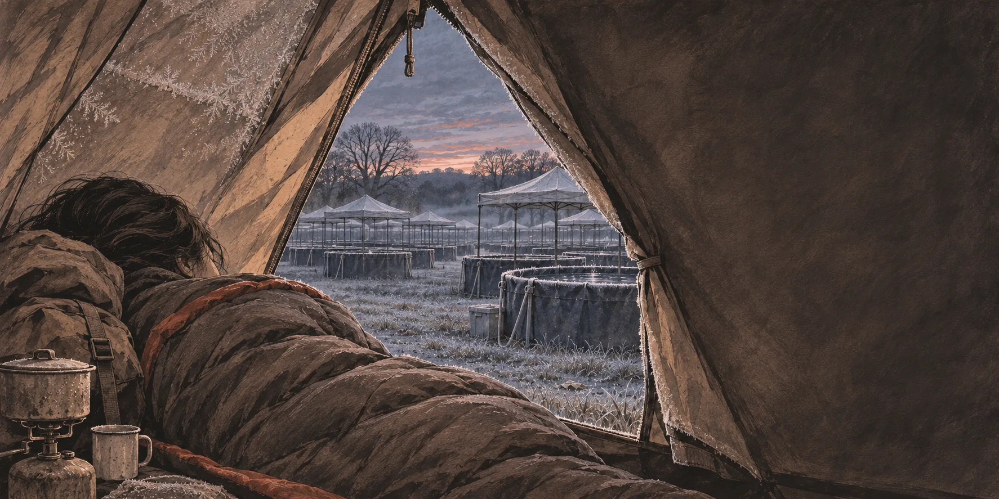
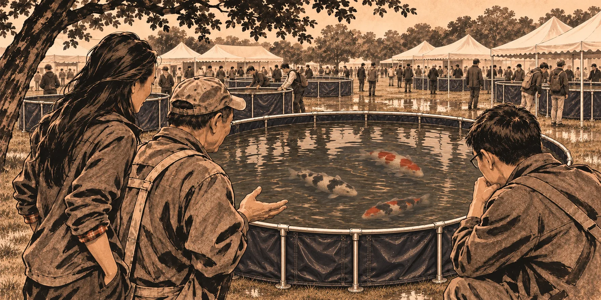
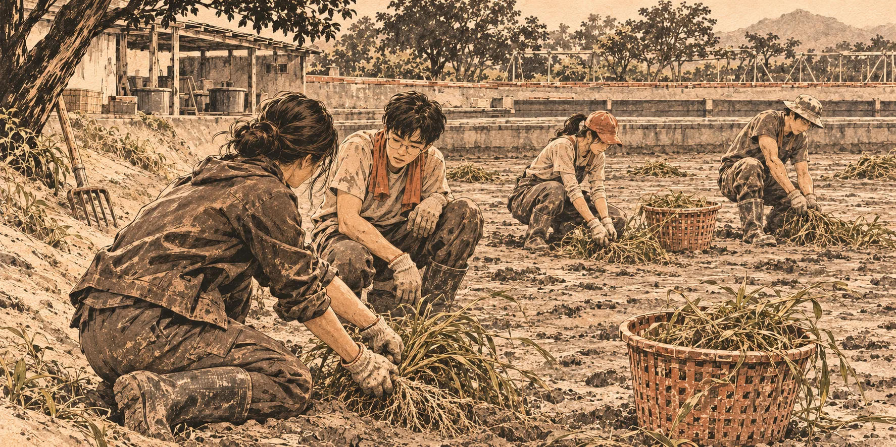
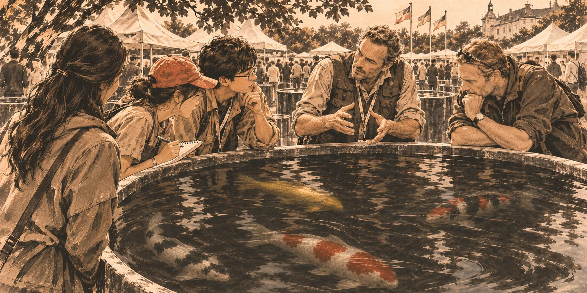
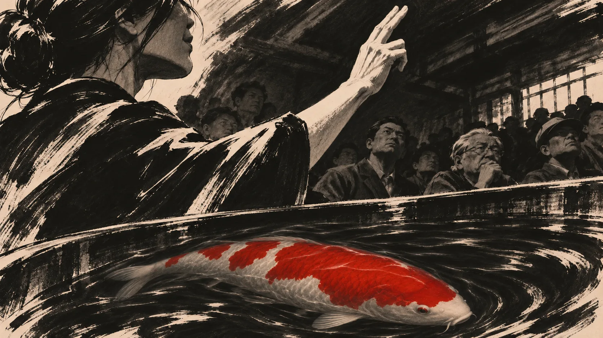
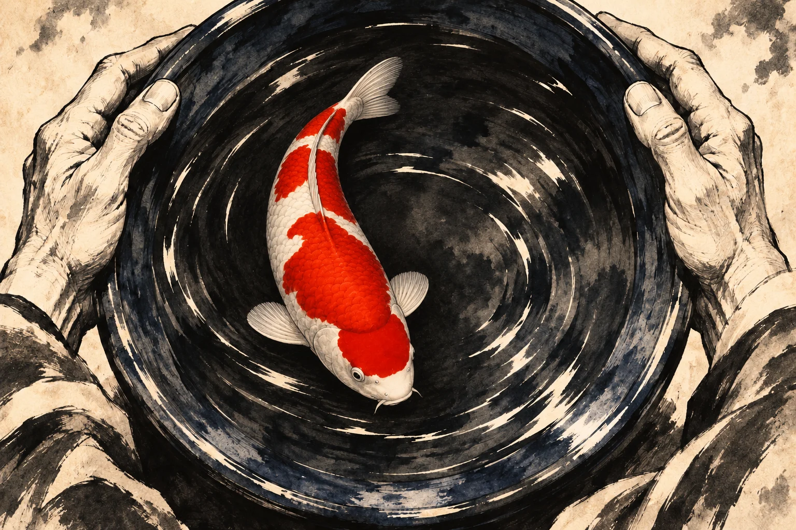

A STORY OF MS. CHUNG · TAIWAN
KOI
QUEEN
An eye for living art.
A life shaped by difficult choices.
SCROLL TO READ
AN ILLUSTRATED EXPERIMENT / 2026PROLOGUE / YUNLIN
It began
at the water.
Ms. Chung grew up beside the ponds of her family’s farm. Her grandfather’s example stayed with her. She studied art in Taiwan and Beijing; years later, the family business called her home.

BEFORE THE JOURNEY
A life
measured in
what we do.
Ms. Chung has said that affection for her grandfather helped draw her back to the farm. In her TEDxTaipei talk, she recalls asking him how to use the hours of a life. His own work on that land became an example she carried forward.

01 / BEFORE THE FARM
First,
she learned
to see.
One biographical account names the art program at Fengyuan High School in Taiwan. After graduating, she studied art in Beijing, where she recalled choosing lacquer art.

02 / THE RETURN
She came
back to
the ponds.
She returned to Sing Chang as CEO. What she had learned about colour and composition became part of how she saw, selected, and presented koi.
02 → THE WEIGHT
Coming home did not make the work easier.

THE WEIGHT / THE CHOICE
Debt on
the desk.
Fish in the water.
In her 2014 TEDxTaipei talk, Ms. Chung described returning to a family business under heavy debt. The choice was to face it, one decision at a time.
THE DECISION
If the world did not know Taiwanese koi, she would bring the fish to the world.
At the 2003 Holland Koi Show, she saw how little of the European market knew Taiwan’s fish. The path forward ran through show halls, introductions, and trust built face to face.
READ THE MINISTRY OF AGRICULTURE ACCOUNT
03 / THE CROSSING
One fish.
One hall.
A wider world.
She returned to European shows under the “Formosa Taiwan” name. By 2010, reporting described five international shows a year and direct relationships with overseas buyers.

AN EARLY UK SHOW
A tent.
A cold night.
Another morning.
For one UK exhibition, Ms. Chung slept in a tent to save hotel costs. Her account recalls temperatures around −4°C. The outdoor show grounds could be beautiful; getting there still demanded a great deal.
THE CIRCLE GROWS
The journey became
larger than one farm.
Later European shows became a shared effort. In 2009, Taiwanese breeders presented together in a Taiwan pavilion at the Holland Koi Show. For fellow breeders, the show meant seeing the market firsthand, hearing buyers’ responses, and forming their own opinions.
READ THE MINISTRY’S SHOW REPORT
04 / PASS IT ON
The next journey
began in the mud.
Ms. Chung also opened the farm to young people. Her Koi Academy started with the work that keeps a fish farm running: clearing weeds, tending ponds, learning to catch and pack koi. It was a test of commitment and a way to learn the life behind the fish.
READ THE ARCHIVED KOI ACADEMY REPORT
First, the hands learn the work.
Then the world opens.

Students who did well at the farm could travel with her to Holland. There, fish keeping met international trade: they encountered dealers and customers in person, saw how people responded to different koi, and could make up their own minds about the work’s possibilities.
FROM THE RECORD
The ink gives way
to the archive.
The illustrated scenes express the stakes. The photographs show Ms. Chung at work.
SOURCE: TAIWAN MINISTRY OF AGRICULTURE
JAPAN / 2018
Then came
one defining bid.

05 / S-LEGEND
The hand
went up.
¥203 million.
At Sakai Fish Farm’s 2018 auction, Ms. Chung placed the winning bid for the Kohaku S-Legend as the Taiwan dealer for a client. The price made headlines; the judgment behind it had taken years.
READ THE UK JUDGES’ ACCOUNTAFTER THE NUMBER
A price is a moment.
An eye takes a lifetime.
Colour. Form. Movement. Lineage. Potential. A koi is never only the figure attached to it.

06 / THE EYE
Look closer.
Look ahead.
Ms. Chung’s work asks collectors to see beyond the first impression: the body a fish has now, and what it may become with time and care.
END OF THIS CHAPTER
The story is still
in the water.
This is an illustrated interpretation of moments in Ms. Chung’s career. The main Koiqueen site holds more photographs, context, and source links.
Original generated illustrations are symbolic scenes, not documentary images or likenesses.